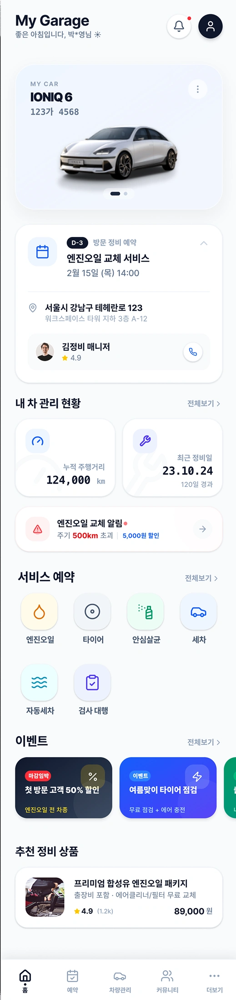
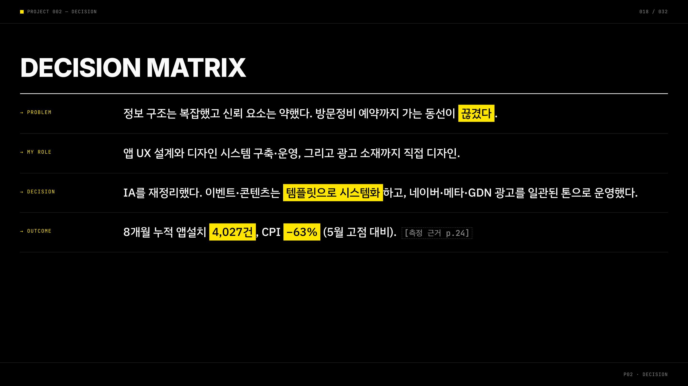
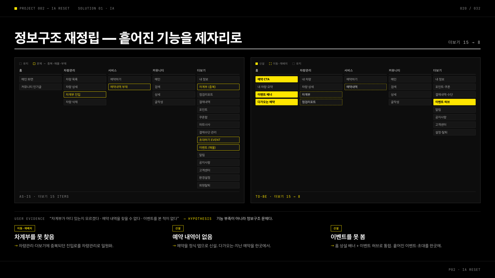
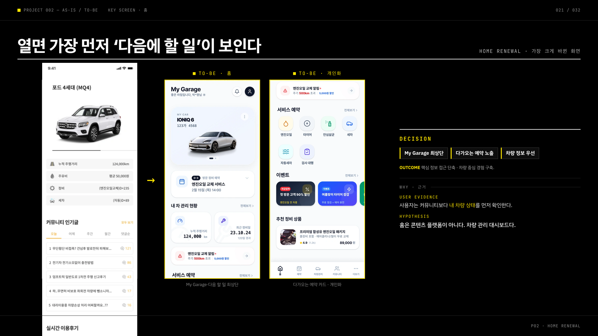
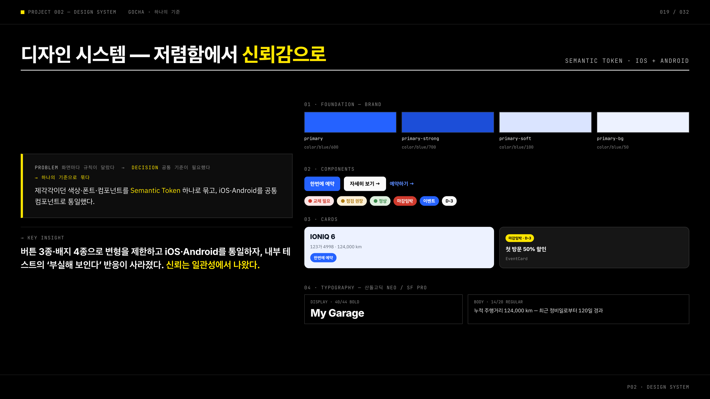
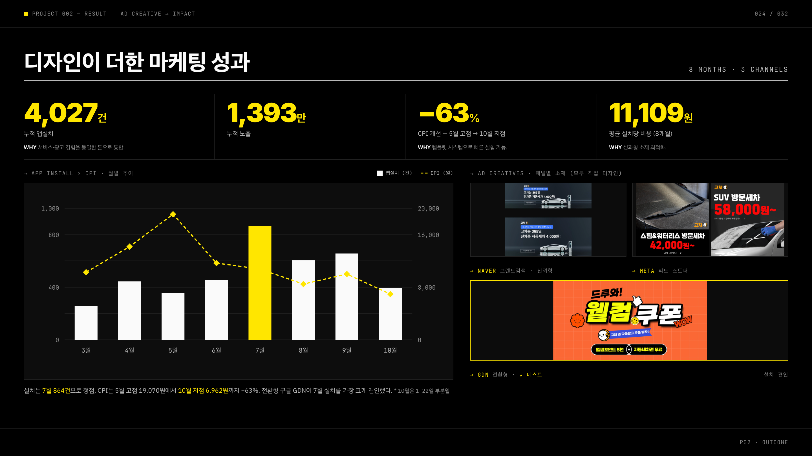

안현서
UI/UX DESIGNER
메인
프로젝트
CONTACT
→
←
프로젝트 목록으로
PROJECT 02 · APP · MARKETING
2022 / 24 · AJ Maintenance
02
고챠 — 방문
정비 서비스.

CLIENT
AJ Maintenance
ROLE
UX · Design System · Ads
PERIOD
2022 — 2024
DEVICES
App · Marketing
01
/ 개요
DECISION MATRIX
저렴함에서
신뢰감
으로.
→ PROBLEM
정보 구조는 복잡했고 신뢰 요소는 약했다. 방문정비 예약까지 가는 동선이 끊겼다.
→ MY ROLE
앱 UX 설계와 디자인 시스템 구축·운영, 그리고 광고 소재까지 직접 디자인.
→ DECISION
IA를 재정리하고 이벤트·콘텐츠는
템플릿으로 시스템화
, 네이버·메타·GDN 광고를 일관된 톤으로 운영했다.
→ OUTCOME
8개월 누적 앱설치 4,027건, CPI −63% (5월 고점 대비).
IMPACT · 고챠 8개월 · 3 채널
4,027
누적 앱설치 · 건
8개월
1,393만
누적 노출
3 채널
−63%
CPI 개선
5월 고점→10월
11,109원
평균 설치당 비용
8개월 평균
02
/ 과정 · 화면
IA · SYSTEM · ADS
하나의 기준으로
제품부터 광고까지.

DECISION
정보구조·신뢰·동선 문제를 IA·시스템·광고로 푼 결정 정리

IA RESET
흩어진 기능을 제자리로 — 더보기 15 → 8, 차계부·예약·이벤트 재배치

HOME RENEWAL
열면 가장 먼저 ‘다음에 할 일’ — My Garage·다가오는 예약 최상단

DESIGN SYSTEM
저렴함에서 신뢰감으로 — Semantic Token, iOS·Android 공통 컴포넌트

RESULT
디자인이 더한 마케팅 성과 — 4,027건 설치, CPI −63%, 채널별 소재 직접 제작
03
/ 회고
RETROSPECT
LIMITATION
실제 유저 리서치의 한계
초기 사용자 부족 — 내부 관점에 머문 부분이 있었다.
LEARNING
디자인 성과는 증명이 필요하다
광고 규모 영향과 분리하기 어려웠다 — 기여 측정의 과제.
NEXT STEP
AI + User Research
실제 유저 리서치와 AI 분석을 결합 — 이 문제의식이 위페어 AI Workflow 구축으로 이어졌다.
← PREV · 01
위페어
— 공업사 SaaS
NEXT · 03 →
센시콘
— 키오스크